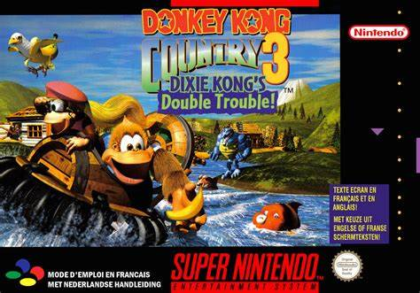

A História do Donkey Kong Country 3
imagem do jogo Donkey Kong Country 3
Donkey Kong Country 3: O Problema Duplo de Dixie Kong! É um jogo de 1996 desenvolvido pela Rare e publicado pela Nintendo para o Super Nintendo Entertainment System (SNES). Foi lançado em 18 de novembro de 1996, na América do Norte, em 23 de novembro de 1996 no Japão, e em 13 de dezembro de 1996 na Europa e Austrália. É a terceira parte da série Donkey Kong Country e serve como uma sequência direta de Donkey Kong Country 2: Diddy's Kong Quest. Também foi relançador para o Game Boy Advance (GBA) em 2005. O jogo foi disponibilizado para download no serviço de Console Virtual do Wii em 2007, bem como para o Console Virtual do Wii U em 2014.
Dixie Kong's Double Trouble! é um jogo de plataforma onde os jogadores controlam Dixie Kong e seu primo, Kiddy Kong, através de 8 mundos que compõem um total de 48 níveis. Muitos dos elementos de jogabilidade dos jogos anteriores da série marcam um retorno neste jogo, como barris,[5] níveis de bônus que recompensam o jogador com "moedas bônus" especiais, moedas DK, ajudantes de animais e um modo multiplayer. [6] Ambos os Kongs jogáveis têm habilidades únicas, como a capacidade de Dixie de retardar sua descida girando seu rabo de cavalo, [7] e a capacidade de Kiddy de saltar em águas abertas. [8][9] Os Kongs também podem se pegar para jogar uns aos outros em torno de níveis; o impacto do outro jogador-personagem pode revelar pisos rachados, interruptores ocultos ou áreas secretas. A qualquer momento, o jogador pode trocar Kongs durante um nível. [10]
Os níveis do jogo incluem uma mistura de níveis de plataforma, natação e on-rails. Eles são baseados em vários temas que retornam, incluindo florestas, falésias, fábricas e topos de montanhas. O design de nível é mais diversificado em comparação com seus antecessores, o que inclui quebra-cabeças e obstáculos mais complexos. [11] Cada nível tem um inimigo chamado Koin; cada um desses inimigos carrega a Moeda DK de seu respectivo nível, segurando-a como um escudo. Como esses inimigos sempre enfrentam o jogador, eles devem ser derrotados jogando um barril de aço sobre eles para que ele salte de uma parede atrás deles, a fim de golpeá-los por trás. [6] O mundo do jogo também é mais complexo, permitindo que os jogadores explorem entre cada área em vez de forçá-los ao longo de um caminho linear. Para isso, o jogo inclui vários veículos, como uma lancha e hovercraft que podem ser usados para atravessar o mundo e acessar mundos diferentes. [11][13]
O jogo apresenta "amigos do animal", que retornam de seus antecessores. Os animais que retornam incluem Enguarde o peixe-espada, Squitter, a aranha, e Squawks, o papagaio. [14] Novos animais incluem Ellie, a elefanta, que pode sugar água através de seu tronco para pulverizar inimigos com, e Parry o "pássaro paralelo", que voa diretamente acima dos personagens do jogador e pode ser usado para coletar itens fora de alcance. [9] Como no jogo anterior, os jogadores podem controlar diretamente os animais em vez de apenas montá-los. [14] Espalhados pelo mundo da Kremisphere do Norte estão os Irmãos Urso, uma família de ursos que fornecem aos jogadores dicas, itens-chave ou outros serviços. [15] Os jogadores podem coletar itens em níveis para negociar com os ursos por outros itens ou para ajudar a progredir para níveis posteriores; [16] um desses itens é a Bear Coin, que age como a moeda do jogo. [6] Outros membros da família Kong, como Wrinkly Kong, Swanky Kong e Funky Kong, também podem ser encontrados em todo o mundo, cada um dos quais oferecem seus próprios serviços. [17]
Os personagens do jogo são Dixie Kong, que é namorada de Diddy Kong, e seu primo mais novo, Kiddy Kong. [18] Espalhados pelo mundo estão vários outros personagens: Wrinkly Kong aparece em "Save Caves", que quando inscrito permitem que o jogador salve seu jogo; Funky Kong desempenha um papel fundamental no jogo, pois ele fornece ao jogador veículos para atravessar o mundo; Swanky Kong, reaparecendo do jogo anterior, permite que os jogadores desafiem Cranky Kong em uma competição envolvendo arremesso de bolas em alvos em troca de Bear Coins. [17] Novos para a série são os Irmãos Urso, treze ursos fornecendo ao jogador serviços em troca de Bear Coins, alguns dos quais são fundamentais para avançar através do jogo. [15] O principal antagonista dos jogos anteriores, King K. Rool, reaparece sob o apelido de "Barão K. Roolenstein". [19]